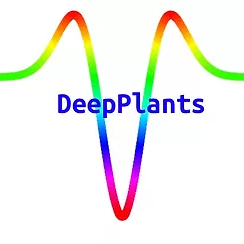
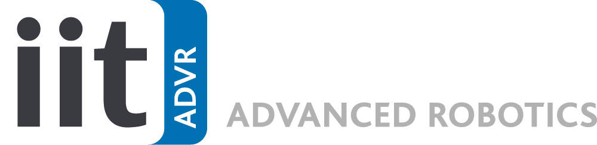
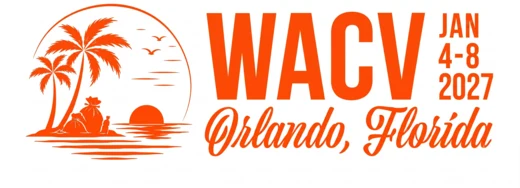
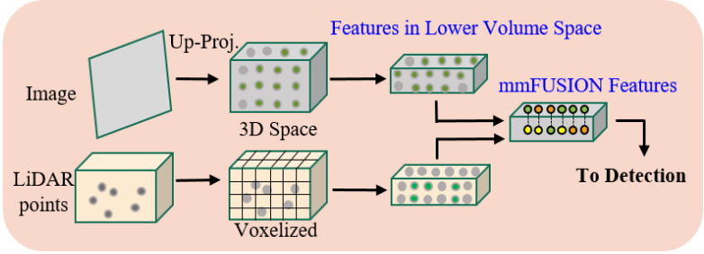
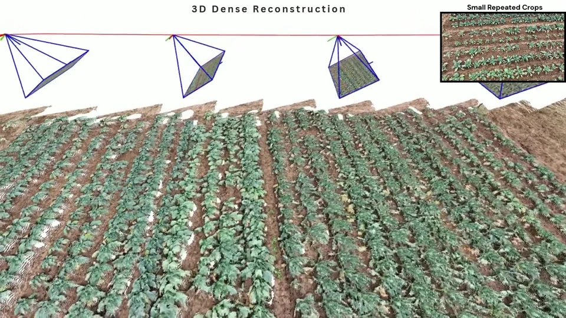
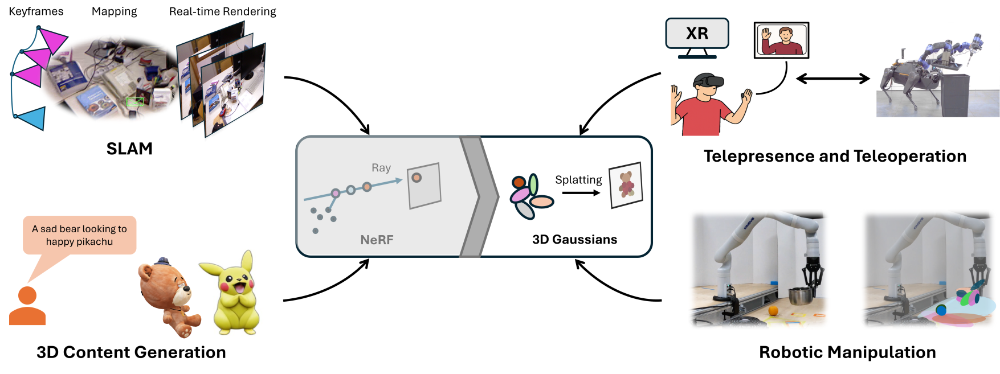
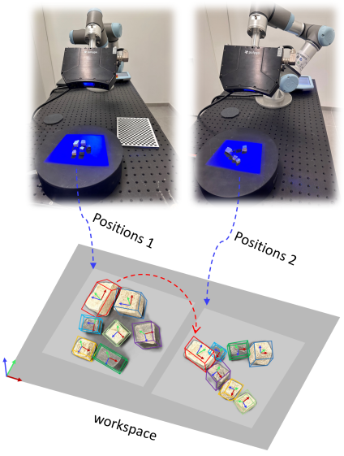
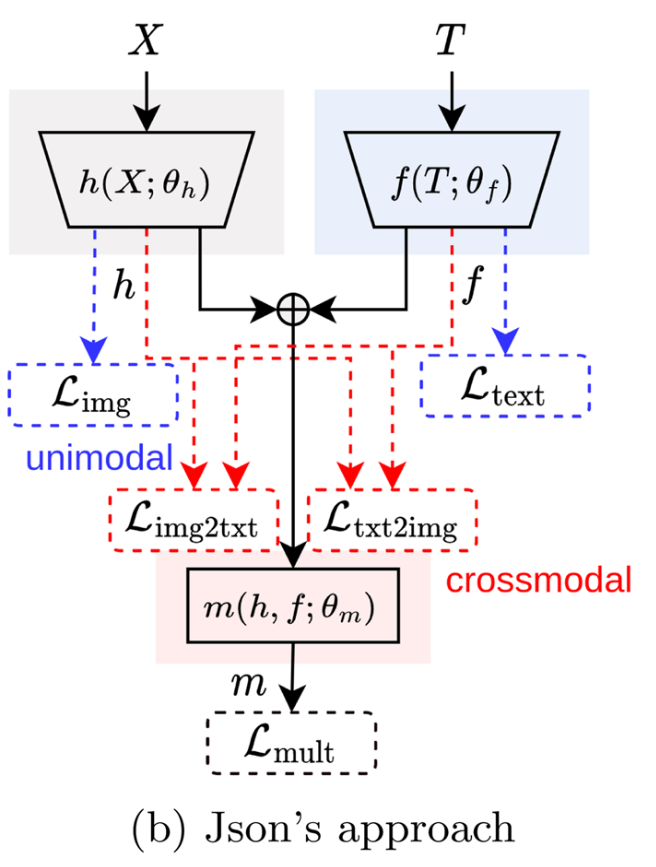
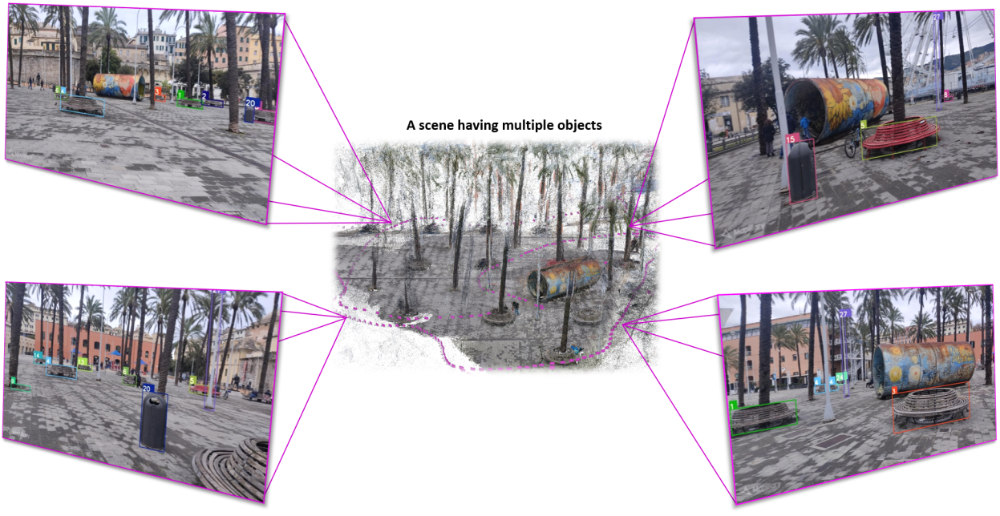

3D Mapping and Reconstruction
Visual localization, SLAM, structure from motion, and neural scene representations for field-scale mapping and real-time visualization.
I develop autonomous UAV perception systems for agricultural mapping, combining visual localization, SLAM, and dense 3D reconstruction. At the Italian Institute of Technology, I worked on 3D Gaussian Splatting for robotic teleoperation, autonomous artifact scanning, and LiDAR–camera fusion for 3D detection. I earned my Ph.D. at the University of Genoa and the Italian Institute of Technology.
SLAM, dense 3D mapping, multimodal perception, and robotic autonomy.
AgroMap3D accepted at WACV 2027. First prizes at VISUM 2021 and EEML 2020.


Visual localization, SLAM, structure from motion, and neural scene representations for field-scale mapping and real-time visualization.
UAV sensing and mission control, 6-DoF object pose estimation, robot motion planning, and automated 3D scanning.
Learning-based fusion of camera and LiDAR data for 3D detection, and geometric methods for object localization across multiple views.

Reliability-Aware Dense Mapping from Agricultural UAV Video
Builds dense field maps using reliability-weighted pose constraints.
Real-time 3D mapping for robot teleoperation in VR.
Robotic artifact scanning with 6-DoF pose estimation.






Developing UAV perception and dense reconstruction pipelines for agriculture. Built a mission-control and RGB streaming pipeline on ModalAI VOXL 2 using PX4 and MAVSDK/MAVLink. Conduct field data collection using the DJI Mavic 3.
Advanced Robotics · Genoa, Feb–Aug 2025. SLAM and 3D Gaussian Splatting for teleoperation.
Center for Cultural Heritage Technology · Venice, Feb 2024–Jan 2025. Robotic artifact scanning and 6-DoF pose estimation.
LiDAR–camera fusion for autonomous driving and multi-view 3D object localization for the EU MEMEX project.
Research in 3D reconstruction and applied machine learning, with teaching support in machine learning, calculus, and power systems.
For research and engineering collaborations in 3D vision, mapping, or robotics, reach me by email or LinkedIn.